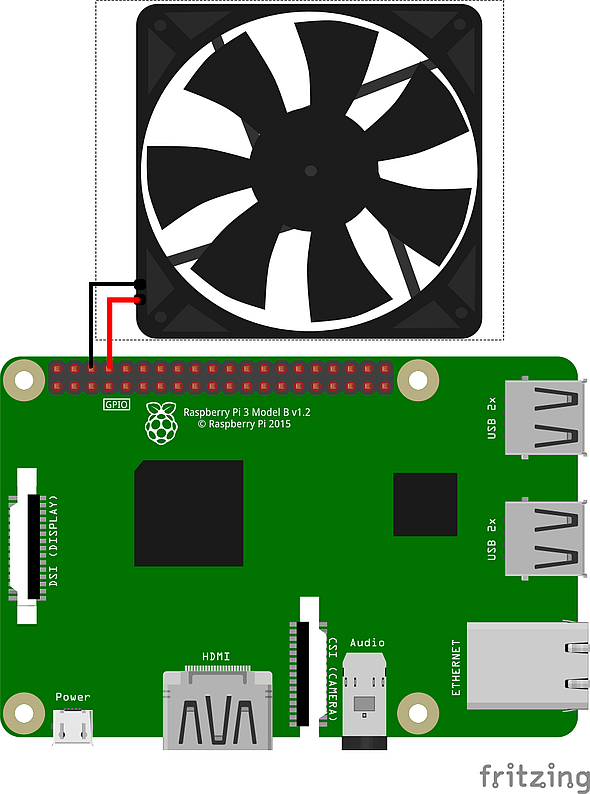

Raspberry Pi Simple Fan Control
by Alexander Feuster
About
Newer Raspberry Pi's as the model 3 do heat up more than earlier models. Therefore there are many Raspberry Pi cases available with additional fan and those fans are also sold separately.
The normal use case is running those fans permanently. To prevent this a temperature controlled solution can be done.
Top
License
All project related files (binaries, source codes, scripts, graphics etc.) are provided "as-is" without any warranties for any data loss, device defects etc. Use at own risk!
Free for personal use. Commercial use is prohibited without permission.
Top
Content
Top
Prerequisites
For the Raspberry Pi simple fan control assembly there are following prerequisites:
- Raspberry Pi
- SD card with installed Linux (Raspbian "Stretch" recommended)
- Fan 5V/3.3V with max. 20mA
Top
Fan wiring
Fan wiring ist pretty simple. Attach the black fan cable (Ground / GND) to PIN 6 (Ground / GND) and the red fan cable to PIN 8 (GPIO14).
Important: since a GPIO has only a allowed maximum current of 20 mA do not use a fan which does need a higher current at 5V/3.3V !
Fan wiring schemata

Top
Temperature control script
The temperature control is done with a BASH script which reads out the system temperature value and depending on the threshold level the GPIO will power the fan on or off.
If a different OS than Raspbian Linux is used there must be probably additional packages installed: "libraspberrypi-bin" (for "vcgencmd") and "wiringpi".
Script code
#!/bin/bash
gpio -g mode 14 out
while true
do
temp=$(vcgencmd measure_temp)
if [ ${temp:5:2} -gt 45 ] ; then
gpio -g write 14 1
else
gpio -g write 14 0
fi
sleep 15
done
The script is set to a threshold temperature of 45 °C. If another temperature threshold is desired change the value "45" in line:
if [ ${temp:5:2} -gt 45 ] ; then
The script is set to do a temperature check every 15 seconds. If another trigger time is desired change the value "15" in line:
sleep 15
Script installation
Copy or create the script fan.sh in:
/usr/bin/fan.sh
and make it executable:
sudo chmod 755 /usr/bin/fan.sh
To start the script after every Raspberry Pi boot open a terminal and enter:
crontab -e
Now add the following line:
@reboot /usr/bin/fan.sh
Save the edited file and close with CTRL+O and CTRL+X.
After a reboot the script will control the fan according to the desired temperature:
sudo reboot
Top
Copyright & Github
Raspberry Pi Simple Fan Control
by Alexander Feuster
Copyright 2018
Find the latest revision of this document at:
https://github.com/feuster/RPi_Simple_Fan_Control